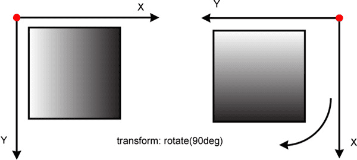

Трансформации.
Свойство transform применяет трансформацию.
Значения:
- Одна или несколько функций трансформации.
- none — (по умолчанию) без трансформации.
Двумерные трансформации.
Пример:
transform: translateX(100px);
transform: translateY(-50px) rotate(45deg);Перемещение.
- translateX(value) — перемещение по оси X.
- translateY(value) — перемещение по оси Y.
- translate(value-1, value-2) — перемещение по оси X (value-1) и по оси Y (value-2). Если второй аргумент не передан, его значением будет 0.
В качестве аргументов принимаются численные значения с указанием единиц измерения.
Масштабирование.
- scaleX(value) — изменение размера по оси X.
- scaleY(value) — изменение размера по оси Y.
- scale(value-1, value-2) — изменение размера по обеим осям. Если второй аргумент не передан, то он принимается равным первому.
Аргументом функции может быть любое число. При 1 элемент имеет исходные размеры.
scale(0) полностью «схлопнет» объект и его не будет видно.
При scaleX(-1) объект зеркально отражается по горизонтали, а при scale(-1, -1) отражается по обоим осям. Меньшие чем -1 значения будут растягивать отзеркаленный объект.
Вместе с объектом масштабируется и его система координат.
Вращение.
- rotate(угол) — вращение.
Угол поворота задаётся в градусах (deg). Положительное значение угла повернёт объект по часовой стрелке, а отрицательное — против.
Вместе с объектом поворачивается его система координат.
Пример:
transform: rotate(90deg);
Теперь, чтобы повёрнутый на 90deg блок двигать по горизонтали, нужно применять translateY, а по вертикали — translateX.
Наклон.
- skewX(угол) — наклон по оси X.
- skewY(угол) — наклон по оси Y.
- skew(угол-1, угол-2) — наклон по обеим осям. Если второй аргумент не передан, его значением будет 0.
Для оси X положительное значение угла наклоняет объект влево, а отрицательное — вправо.
Для оси Y положительное значение угла наклоняет объект по часовой, а отрицательное — против.
При наклоне элемент искажается.
Свойство transform-origin, active-point объекта.
Свойство transform-origin задаёт точку отсчёта системы координат, в рамках которой будет работать трансформация.
transform-origin: x, y;Значения задаются в любых единицах измерения длины, а также ключевыми словами left, right, top, bottom и center.
Если второе значение не указано, то оно принимается за 50%.
По умолчанию, значение равно 50% 50%, то есть начало системы координат находится в центре объекта.
Применение трансформаций.
С помощью трансформаций можно поворачивать текст в блоках и фонах, создавать тени, отличающиеся от стандартных box-shadow, без применения картинок, создавать различные эффекты и многое другое.
Центровка с помощью transform: translate.
С помощью абсолютного позиционирования и трансформаций можно отцентрировать блок с переменными размерами:
div {
position: absolute;
left: 50%;
top: 50%;
transform: translate(-50%, -50%);
}